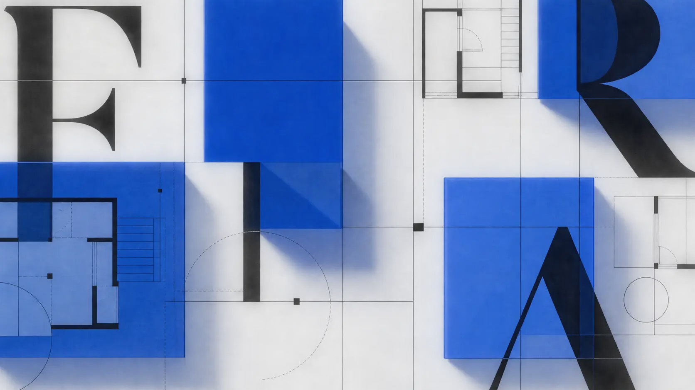
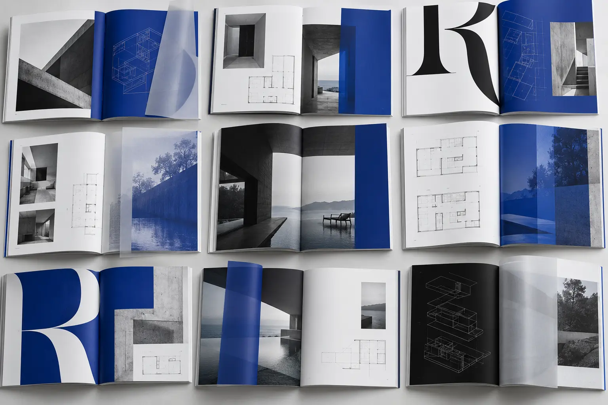
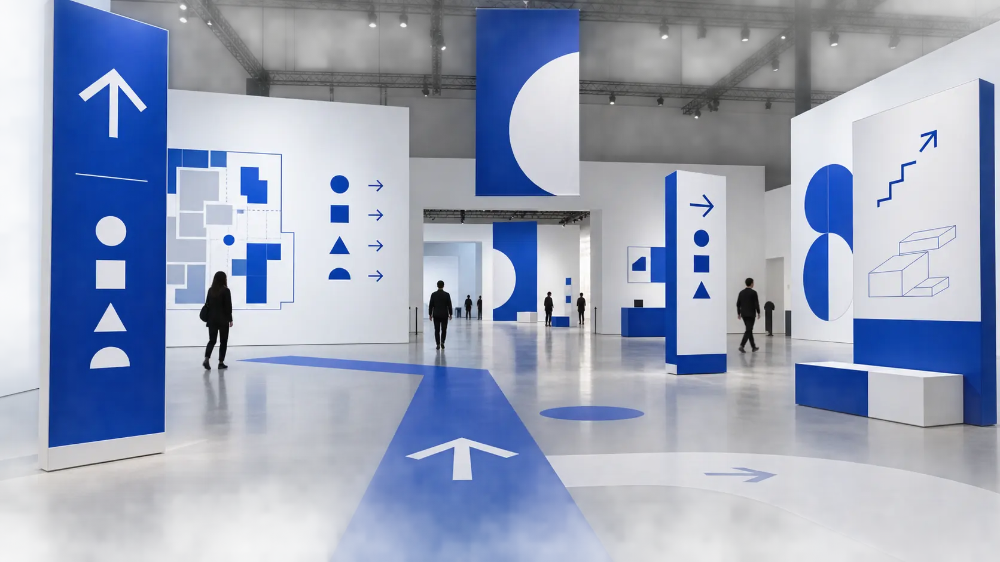

ATHENS / 04—18 OCTOBER / 2026
FORMA
Space becomes language.
IDENTITY / EDITORIAL / WAYFINDING
01 / THE PREMISETHE CITY
THE CITY
AS A PAGE.
FORMA is an architecture biennale shaped as a living publishing system. Plans, margins, coordinates and public movement become one identity that changes scale without losing structure.
MA
02 / ADAPTIVE WORDMARK
The name behaves like a floor plan: split into rooms, locked to axes and rebuilt for every format. The gap is not empty space—it is the place where content enters.
OPEN.
DIVIDE.
OCCUPY.
04 / EDITORIAL VOICE
Aa
Large serif statements carry cultural ideas. A precise grotesk controls dates, venues, architects and routes.

A SYSTEM
FOR THE PUBLIC.

FOR ALLLECTURES / WALKS / EXHIBITIONS
06 / FIVE NEW DIRECTIONSFORMA
FORMA
EXPANDS.
Five graphic extensions turn the biennale into a flexible cultural system across print, city, screen and space.
IS OPEN.
Oversized type and plan lines become a street-scale invitation.
04↗
A numerical system connects every building and programme.
LOOK
ENTER
Directional verbs guide movement without decorative icons.
21:00
Time becomes the visual anchor for live programme updates.
FOLLOWS
US
A changing cover system built from one strict grid.